Discriminative vs. Generative Models
A discriminative model tells things apart: given a picture, it says what is in it, as a phone does when it sorts your photos. A generative model makes new things: a picture nobody has drawn, as an image generator does. They look like rival projects, yet they are two halves of one joint distribution. Multiply the generator's \(p(x)\), how common a picture \(x\) is, by the classifier's \(p(y \mid x)\), the chance of label \(y\) given that picture, and you get the joint probability \(p(x, y)\): one hill for each label. Compare the hills at one spot, and a generator can classify; climb one hill, and a classifier can steer a generator, which is classifier guidance for diffusion models. This note builds both models on real handwritten digits, starting from counts in a circle on a map, and derives the two connections.
Video: Discriminative vs. Generative Models: How Two Kinds of AI Complement Each Other?, a five-and-a-half-minute visual explainer of this note, from counts in a circle to classifier guidance.
Every picture is a point
The running example tells handwritten threes from eights: the 183 threes and 174 eights of the UCI handwritten digits, the set bundled with scikit-learn, \(n = 357\) pictures in all. Each picture has 8 × 8 pixels with brightness from 0 to 1, so it is a list of 64 numbers, \(x = (x_1, \dots, x_{64})\): one point in a space of 64 dimensions. Its label \(y\) is 3 or 8.
To see the digits, flatten that space onto a map that keeps the two directions in which these pictures differ most (their first two principal components, which carry 36% of the variation). Each dot is one real digit. The threes gather on the left and the eights on the right: moving right closes the digit's left side, and a three turns into an eight. Every spot on the map is a picture too, the average digit plus that spot's amounts of the two directions, so the map can show what a model says about any picture. Everything drawn on the map is computed there, except the runs that make new digits, which work in all 64 pixels and are drawn where each step lands on the map.
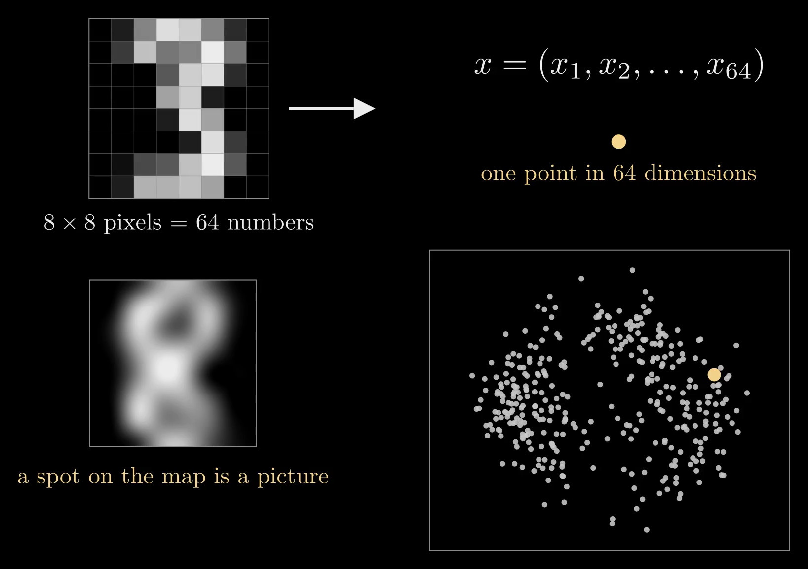
Figure 1. One picture is 64 numbers, one point \(x\) (top). On the map each of the 357 real digits is a dot, placed by the two directions along which the digits differ most; the picture at the yellow spot is shown on the left (bottom).
The discriminative model
A discriminative model, or classifier, asks: given this picture, is it an eight? To learn that it needs labels, so color each dot by its label, teal for threes and purple for eights.
Draw a small circle around one picture. It holds 12 real digits, and 9 of them are eights. Nine in twelve is a conditional probability, \(p(8 \mid x) \approx 9/12\): the chance of an eight given the picture \(x\), where the bar means "count only inside the circle". This number at every spot, \(p(y \mid x)\) for every picture \(x\) and label \(y\), is all a classifier wants.
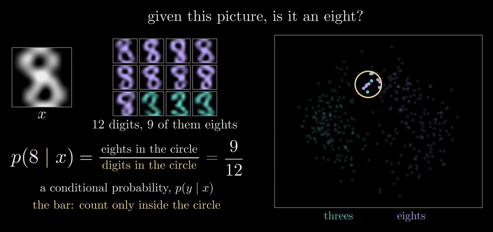
Figure 2. A circle on the map holds 12 real digits, 9 of them eights (the pictures on the left), so \(p(8 \mid x) \approx 9/12\) for the picture \(x\) at its center.
A circle holds only a few labeled digits, and many spots have none nearby, so a classifier fits one formula to these shares instead. The simplest is logistic regression:
\[p(8 \mid x) = \operatorname{sigmoid}(w \cdot x + b), \qquad \operatorname{sigmoid}(t) = \frac{1}{1 + e^{-t}}\]
Here \(w\) is a list of weights, one per coordinate of \(x\), \(w \cdot x = \sum_j w_j x_j\) is the weighted sum of the coordinates, and \(b\) is an offset. The pictures with \(w \cdot x + b = 0\) form a straight border: a line on the map, a flat plane among all 64 pixels. Away from it, \(w \cdot x + b\) grows in proportion to the distance from the border, and the S-shaped sigmoid squashes it into a probability between 0 and 1, exactly one half on the border; the other label gets \(p(3 \mid x) = 1 - p(8 \mid x)\). The video's frames write the sigmoid as \(\sigma\); this note keeps \(\sigma\) for the width of a bell.
Training picks \(w\) and \(b\) to make the true labels likely. Over the labeled digits \((x_i, y_i)\) it maximizes
\[\sum_{i=1}^{n} \log p(y_i \mid x_i) - \frac{\lambda n}{2} \lVert w \rVert^2\]
where each term in the sum is the log of the probability that the formula gives digit \(i\)'s true label, and the tiny penalty, with \(\lambda = 10^{-4}\), only keeps the answer unique. A digit far on its correct side already scores almost the maximum, so the fit is settled by the digits near the border, the ones it gets wrong or barely right. On the map the fitted border gets 13 of the 357 digits wrong (3.6%). At the circle's center its answer is 0.64 rather than the count's 0.75: one straight border can't match every small circle, and twelve digits make a noisy count anyway.
It knows the border, not the digits
Slide every digit along the border, each by an amount that depends linearly on its position along the border, so that each keeps its distance from the border. Retrained on the moved digits, the formula comes out the same, to the solver's precision (Figure 3). The reason lies in the conditions that hold at the best \(w\) and \(b\), where the gradient of the training goal is zero:
\[\sum_i r_i = 0, \qquad \sum_i r_i\, x_i = \lambda n\, w, \qquad r_i = [y_i = 8] - p(8 \mid x_i)\]
Here \(r_i\) is digit \(i\)'s error: its label written as 1 for an eight or 0 for a three, minus the formula's answer. The slide keeps every distance from the border, so it keeps every \(r_i\). It moves digit \(i\) by \(c_i u\), where \(u\) is the direction along the border and \(c_i = \alpha + \beta\,(x_i \cdot u)\) for two fixed numbers \(\alpha\) and \(\beta\), so the second sum changes by \(\big(\sum_i r_i c_i\big)\, u\), which is zero: \(\sum_i r_i = 0\) removes the \(\alpha\) part, and \(\sum_i r_i\,(x_i \cdot u) = \lambda n\, w \cdot u = 0\) removes the \(\beta\) part, because \(w\) is perpendicular to the border. Both conditions still hold, so the old \(w\) and \(b\) are still the best. A move across the border would change the errors, and the fit with them.
So many arrangements of the digits share one classifier. It learned the border, not where the digits are, and where the digits are is exactly what drawing a new one needs.
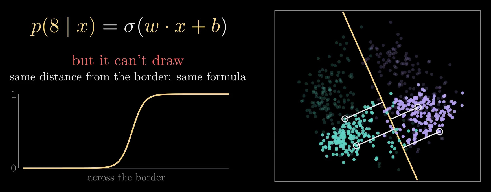
Figure 3. The classifier's border on the map and its S-curve across the border (\(\sigma\) here is the sigmoid). The digits have slid along the border, away from where they were (faint dots); each kept its distance from the border, and the retrained formula is the same.
The generative model
A generative model, or generator, asks a different question: what do real digits look like? That needs no labels. The first diffusion models learned from pictures alone (Sohl-Dickstein and colleagues 2015; Ho, Jain and Abbeel 2020); labels came in later, for example through the classifier guidance at the end of this note.
Same circle, new count: put the colors away and count all its digits. It holds 12 of the 357, a share of \(12/357 \approx 3.4\%\), which says how common pictures like this one are. Why a circle, and not the point itself? No two handwritten digits are exactly alike, so a single point holds no digit at all, and the share shrinks with the circle. Dividing by the circle's area gives a number that settles instead of shrinking, like people per square mile, and that number is the density \(p(x)\):
\[p(x) \approx \frac{(\text{digits in the circle}) / n}{\text{area of the circle}}\]
The circle's area is 0.25 in the map's units, so \(p(x) \approx 0.034 / 0.25 \approx 0.14\) there. The conditional probability needed no area: both of its counts come from the same circle, so the area cancels.
The simplest model of \(p(x)\) does this counting smoothly. It puts a small bell, a Gaussian, on every real digit and averages them:
\[p(x) = \frac{1}{n} \sum_{i=1}^{n} \mathcal{N}(x;\, x_i,\, \sigma^2 I)\]
Here \(x_i\) is the \(i\)-th real digit, and \(\mathcal{N}(x; x_i, \sigma^2 I)\) is a round bell centered on it with width \(\sigma\) in every direction (\(I\) is the identity matrix): it is largest at \(x_i\), falls off as \(e^{-\lVert x - x_i \rVert^2 / 2\sigma^2}\) and holds a total probability of one, so the average holds one too. This is a kernel density estimate. On the map, with \(\sigma = 0.2\), it is a landscape: bright where digits crowd, dark where none land.
Arrows uphill
To draw a new digit, climb the landscape. The arrow \(\nabla_x \log p(x)\), the gradient of \(\log p(x)\) with respect to the picture (one entry per coordinate of \(x\)), points where \(p(x)\) grows fastest: uphill, toward pictures that look more like real digits. It is called the score. For the bells it has a closed form,
\[\nabla_x \log p(x) = \frac{\hat{x}(x) - x}{\sigma^2}, \qquad \hat{x}(x) = \frac{\sum_i \mathcal{N}(x; x_i, \sigma^2 I)\, x_i}{\sum_i \mathcal{N}(x; x_i, \sigma^2 I)}\]
where \(\hat{x}(x)\) is the average of the real digits, each weighted by how close it is to \(x\): the arrow points from \(x\) toward its nearest digits. A diffusion model is a neural network trained, on pictures alone, to output this arrow for any picture (Song and Ermon 2019; Ho, Jain and Abbeel 2020; see the Diffusion Model note).
From noise to a new digit
A diffusion model starts from pure noise and follows the arrows while the bells narrow. The run in the video works in all 64 pixels. At width \(\sigma\) its model of the pictures is the same average of bells, \(p_\sigma(x) = \frac{1}{n} \sum_i \mathcal{N}(x; x_i, \sigma^2 I)\): the real digits blurred by noise of size \(\sigma\). At \(\sigma = 10\) the bells are so wide that \(p_\sigma\) is one big bell around the average digit \(\bar{x}\), and the run starts from a draw of it, \(x = \bar{x} + 10\,\varepsilon\), where \(\varepsilon\) holds an independent standard Gaussian number for every pixel: pure static. Then it lowers \(\sigma\) in 160 small steps and moves \(x\) along
\[\frac{dx}{d\sigma} = -\sigma\, \nabla_x \log p_\sigma(x)\]
the probability flow of a diffusion model (Song and colleagues 2021; written in terms of \(\sigma\) as in Karras and colleagues 2022). As \(\sigma\) shrinks, each step moves the picture a little toward the digits nearest it at the current blur. At \(\sigma = 0.5\) the run removes the rest of the noise in one straight move, to the weighted average of its nearest digits at that width, \(x + \sigma^2 \nabla_x \log p_\sigma(x) = \hat{x}(x)\).
The result is a digit nobody wrote: a smooth blend of a dozen or more real digits near where the run ended, not a copy of any one of them. (Followed all the way to \(\sigma = 0\), these bells would end on one of the 357 pictures exactly. Real diffusion models learn the arrow with a neural network instead, and trained on enough pictures they make new ones rather than copies; see Kadkhodaie and colleagues 2024.)
But the generator can't say which digit it drew: it never saw a label. Of 60 runs from different noise, 28 ended as eights and the other 32 as threes, as judged by logistic regression on all 64 pixels.
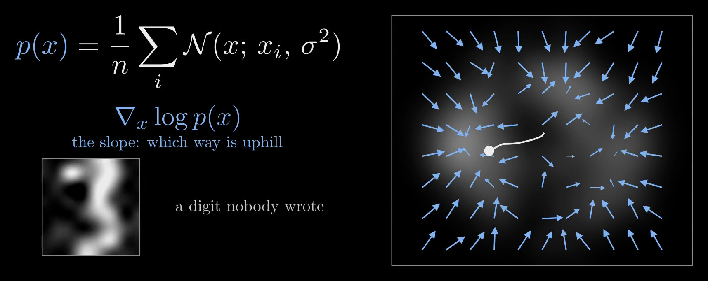
Figure 4. The bells on every digit make a landscape \(p(x)\) on the map, bright where digits crowd, and its arrows \(\nabla_x \log p(x)\) point uphill. The white route is a run in all 64 pixels from pure noise to the new digit on the left, drawn where each step lands on the map.
How are they connected?
The classifier knows the border but not where the digits are; the generator knows where the digits are but not which is which. To connect them, put the colors back and look inside the same circle: nine eights. Nine out of all 357 digits is the joint probability \(p(x, y)\), this picture and this label together:
\[p(x, 8) \approx \frac{(\text{eights in the circle}) / n}{\text{area of the circle}}\]
Unlike the conditional probability, it divides by all 357 digits, not by the 12 in the circle. Counting eights like this at every spot gives a hill, \(p(x, 8)\) across the map: where eights live (Figure 5). Smoothly, it is the bells of the eights alone, still divided by all \(n\) digits, \(p(x, 8) = \frac{1}{n} \sum_{i:\, y_i = 8} \mathcal{N}(x; x_i, \sigma^2 I)\). The threes make a second hill, and the two hills add up to the landscape: \(p(x, 3) + p(x, 8) = p(x)\).
Drawing a picture from the hill of eights is what "make me an eight" means: conditional generation. Strictly, it draws from \(p(x \mid 8) = p(x, 8) / p(8)\), the hill rescaled to a total of one by the share of eights, \(p(8) = 174/357\); the rescaling changes the hill's height, not its shape.
That is why the joint matters: it holds both jobs. Compare its two hills at one spot, and the taller one says what the picture probably is: classification. Draw from one hill, and you get a picture with that label: generation.
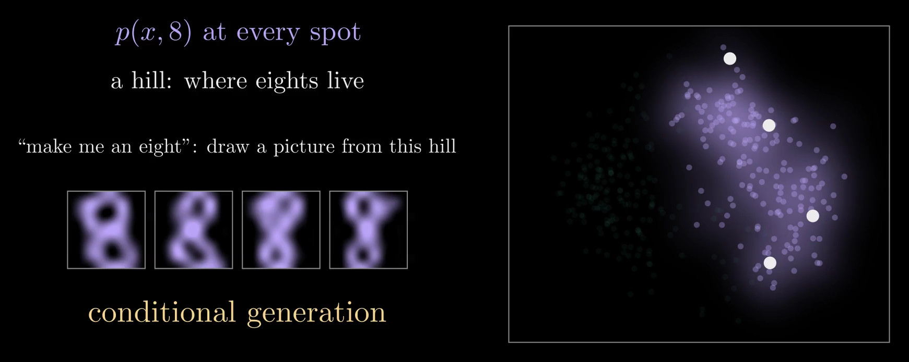
Figure 5. Counting eights at every spot gives the hill \(p(x, 8)\), where eights live. Pictures drawn from it are eights, which is what conditional generation means.
And the joint is just the two models multiplied. In counts, \(9/357 = (12/357) \times (9/12)\): the share of all digits that fall in the circle, times the share of eights among them. In densities, for every picture and label, it is the product rule:
\[p(x, y) = p(x)\, p(y \mid x)\]
The generator's landscape, colored by the classifier, is the pair of hills (Figure 6). Dividing by \(p(x)\) gives Bayes' rule, \(p(y \mid x) = p(x, y) / p(x)\), which turns the hills back into the classifier.
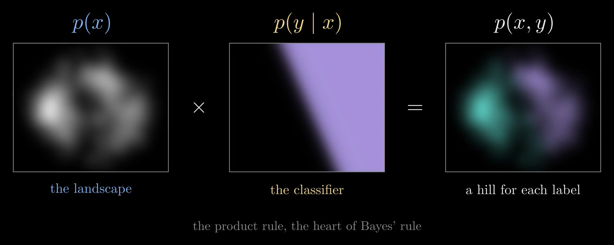
Figure 6. The product rule on the map: the generator's landscape \(p(x)\) times the classifier's \(p(y \mid x)\), purple where it says eight, gives the joint \(p(x, y)\), one hill for each label.
The product rule also says exactly what a classifier lacks. A neural network classifier ends with a softmax over learned scores \(f_k(x)\), one per label:
\[p(y = k \mid x) = \frac{e^{f_k(x)}}{\sum_j e^{f_j(x)}}\]
Set beside Bayes' rule, \(p(k \mid x) = p(x, k) / \sum_j p(x, j)\), the scores are \(\log p(x, k)\) plus some function of \(x\) alone, which cancels in the ratio. Choosing that function is the same as choosing \(p(x)\), the landscape the classifier never learned. Grathwohl and colleagues (2020) choose it by reading \(e^{f_y(x)}\) as proportional to \(p(x, y)\), which makes a classifier a generative model too.
Connection one: a generator can classify
Model each hill as one bell, both of the same shape and width:
\[p(x \mid y) = \mathcal{N}(x;\, \mu_y,\, \Sigma) = \frac{1}{\sqrt{(2\pi)^d \det \Sigma}} \exp\!\Big(-\tfrac{1}{2} (x - \mu_y)^\top \Sigma^{-1} (x - \mu_y)\Big)\]
Here \(\mu_y\) is the center of label \(y\)'s bell; \(\Sigma\) is a covariance matrix, which sets the bell's shape and width and is shared by both labels; \(d\) is the number of coordinates, 2 on the map and 64 for whole pictures; and \(p(x \mid y)\) is label \(y\)'s hill rescaled to a total of one, so the hill itself is \(p(x, y) = p(x \mid y)\, p(y)\). Fitting the bells by maximum likelihood, which makes the labeled digits as probable as possible, sets \(\mu_3\) and \(\mu_8\) to the average three and the average eight, \(\Sigma\) to the spread of the digits around their own label's average, pooled over both labels, and \(p(3)\) and \(p(8)\) to the shares 183/357 and 174/357.
Cut straight across the border and look at the two hills along the cut (Figure 7). Take one picture, one column of the chart. Its two heights are its joints, \(p(x, 3)\) and \(p(x, 8)\), and stacked they add up to how common the picture is, \(p(x)\). So the chance of an eight is purple's share of the column, which is Bayes' rule:
\[p(8 \mid x) = \frac{p(x, 8)}{p(x, 3) + p(x, 8)}\]
For the picture marked in Figure 7 the share is 3/4, the circle's nine in twelve.
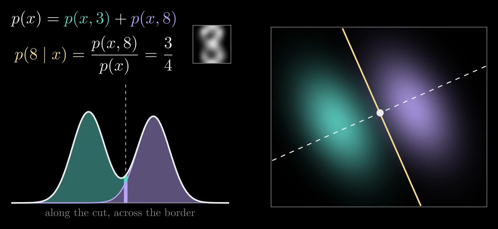
Figure 7. Each label's hill modeled as one bell, both of the same shape; the yellow line is the border and the dashed line a cut straight across it (right). Along the cut, the picture at the white dot has two heights, \(p(x, 3)\) and \(p(x, 8)\), which stack to \(p(x)\); purple's share is \(p(8 \mid x) = 3/4\) (left).
Stretch every column to height one, and the border between the colors traces an S-curve: the classifier's own formula (Figure 8). To see why, take the log of the ratio of the two heights, the log-odds. The bells' normalizing factor is the same for both labels and cancels, and so does the quadratic term \(x^\top \Sigma^{-1} x\), because both bells share \(\Sigma\). Only a straight line in \(x\) remains:
\[\log \frac{p(x, 8)}{p(x, 3)} = \underbrace{(\mu_8 - \mu_3)^\top \Sigma^{-1}}_{w^\top} x \; \underbrace{- \tfrac{1}{2} \big(\mu_8^\top \Sigma^{-1} \mu_8 - \mu_3^\top \Sigma^{-1} \mu_3\big) + \log \frac{p(8)}{p(3)}}_{b}\]
Since \(p(8 \mid x) = 1 / \big(1 + p(x, 3) / p(x, 8)\big)\), this is exactly \(p(8 \mid x) = \operatorname{sigmoid}(w \cdot x + b)\) with \(w = \Sigma^{-1} (\mu_8 - \mu_3)\): logistic regression's formula, built from nothing but averages and one shared spread. This pair of bells is called linear discriminant analysis. If the two bells had different shapes, the quadratic term would survive and the border would curve.
On the map, the border from the bells and the border trained on the labels are parallel to within 0.04 degrees and about a tenth of a unit apart, while the two centers are 1.6 apart. The bells get 12 of the 357 digits wrong (3.4%), the trained classifier 13 (3.6%). The bells fit these digits, so the two borders agree.
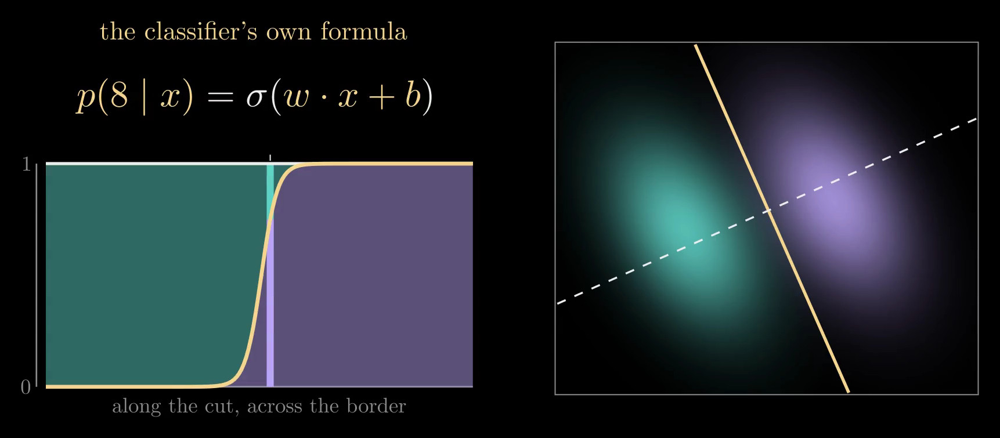
Figure 8. Every column stretched to height one: the border between the colors is the S-curve \(\operatorname{sigmoid}(w \cdot x + b)\), the classifier's own formula (\(\sigma\) in the frame).
When a classifier sorts better
The bells are an assumption about each hill's shape, and when it is wrong, the generator's border inherits the error. The training goals show why. Maximum likelihood for the bells maximizes \(\sum_i \log p(x_i, y_i)\), and by the product rule each term splits in two:
\[\log p(x_i, y_i) = \log p(y_i \mid x_i) + \log p(x_i)\]
The first part is the classifier's own goal; the second asks the model to explain where the pictures are, whatever their labels. When the shape is right, that second part is extra information, and it pins the border down from fewer examples. When the shape is wrong, it pulls the border toward fitting the pictures at the cost of the labels, while a classifier spends everything on the labels. Ng and Jordan (2001) proved the pattern for naive Bayes, a generator with independent bells for each coordinate, against logistic regression: the generator nears its best error after a number of examples that grows only with the logarithm of the number of coordinates, and the classifier needs a number in proportion to it, but the classifier's best error is lower. When the bells are exactly right, Efron (1975) showed that fitting them is the more efficient choice.
The same 357 digits show this in all 64 pixels (Figure 9). Give every pixel its own pair of bells, independent once the label is known (Gaussian naive Bayes), and compare it with logistic regression on the pixels, training on random subsets and testing on 97 held-out digits, over 400 random splits. The bells are slightly ahead below about eight training pictures and nearly done by 60, where they stall at about 4.4% wrong, because pixels are not independent given the label: strokes make neighboring pixels move together. Logistic regression keeps improving and reaches 0.7% at 260 pictures.
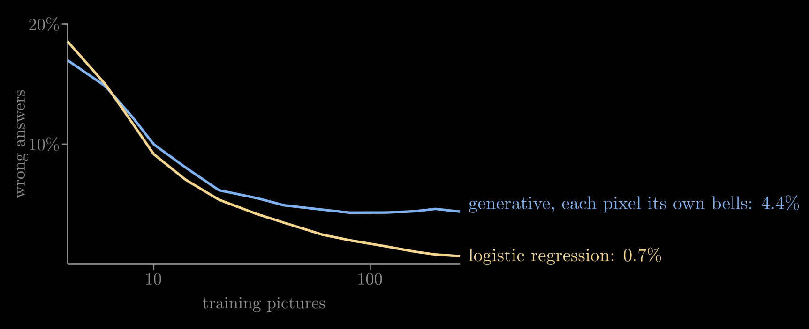
Figure 9. Test error on real threes and eights in all 64 pixels against the number of training pictures, on a logarithmic scale, averaged over 400 random splits. The generator with one pair of bells per pixel flattens early; logistic regression keeps improving.
Connection two: a classifier can steer
To draw an eight, climb the hill of eights. By the product rule that hill is the two models multiplied, \(p(x, 8) = p(x)\, p(8 \mid x)\). Take the log, and multiplying becomes adding; take the slope, and the uphill arrow splits in two:
\[\nabla_x \log p(x, 8) = \nabla_x \log p(x) + \nabla_x \log p(8 \mid x)\]
The first arrow heads for believable digits, and the generator supplies it: it is the score a diffusion model learns. The second heads for pictures that look more like an eight, and the classifier supplies it. For logistic regression it is \(\nabla_x \log \operatorname{sigmoid}(w \cdot x + b) = \big(1 - p(8 \mid x)\big)\, w\), a push along \(w\) that fades once the picture is surely an eight; any differentiable classifier gives its arrow by backpropagation. Added tip to tail at every spot, the two arrows climb the hill of eights (Figure 10). Since \(p(8)\) doesn't depend on \(x\), the same sum is \(\nabla_x \log p(x \mid 8)\), so following it draws from the conditional distribution.
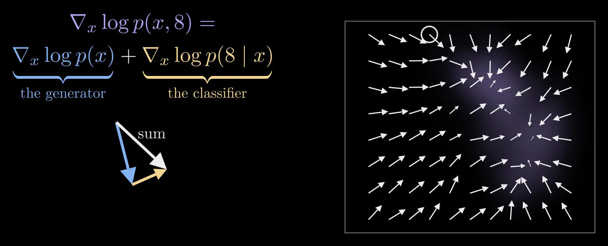
Figure 10. At one spot, drawn large on the left, the generator's arrow (blue) and the classifier's (yellow) add tip to tail into their sum (white). The map shows the sum at every spot, climbing the hill of eights.
Run with both arrows, the same noise that became a three on its own becomes an eight (Figure 11). In all 64 pixels the classifier must read noisy pictures, so the run uses the bells' own classifier with the noise added to their spread: at noise \(\sigma\), \(w_\sigma = (\Sigma + \sigma^2 I)^{-1} (\mu_8 - \mu_3)\), where \(\Sigma\) is the digits' shared spread in all 64 pixels, which is the right classifier for pictures blurred by noise of that size. From the same 60 starting noises, 28 runs ended as eights alone and 56 with the classifier's arrows.
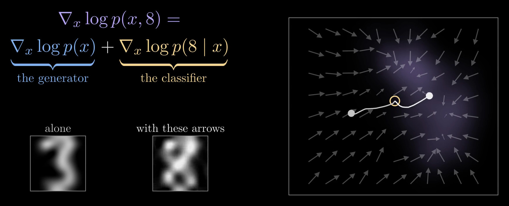
Figure 11. One starting noise, two real runs in all 64 pixels, drawn on the map from the ringed start: following the generator alone it becomes a three; with the classifier's arrows added, an eight.
This is classifier guidance (Song and colleagues 2021; Dhariwal and Nichol 2021). In practice the classifier is a network trained on noisy pictures, and its arrow is often scaled by a guidance strength \(s > 1\), following \(\nabla_x \log p(x) + s\, \nabla_x \log p(y \mid x)\), which trades variety for pictures that look more strongly like the label. The runs here use \(s = 1\), the sum exactly as the product rule gives it. Classifier-Free Guidance reaches the same direction without a separate classifier, by training one network both with and without labels.
Two halves of one joint distribution
A classifier learns the border, \(p(y \mid x)\); a generator learns the landscape, \(p(x)\). Multiply them and you have the joint, \(p(x, y) = p(x)\, p(y \mid x)\): one hill for each label. Compare the hills to classify; climb one to generate. The two kinds of model aren't rivals but two halves of one joint distribution. In practice, choose a generative model when you need new examples or a measure of how unusual an input is, when labels are scarce, or when you trust the shape it assumes; choose a discriminative model when you only need labels and have plenty of them.
References
- A. Ng and M. Jordan, On Discriminative vs. Generative Classifiers: A Comparison of Logistic Regression and Naive Bayes, NeurIPS 2001.
- B. Efron, The Efficiency of Logistic Regression Compared to Normal Discriminant Analysis, Journal of the American Statistical Association, 1975.
- W. Grathwohl and colleagues, Your Classifier Is Secretly an Energy Based Model and You Should Treat It Like One, ICLR 2020.
- J. Sohl-Dickstein and colleagues, Deep Unsupervised Learning Using Nonequilibrium Thermodynamics, ICML 2015.
- Y. Song and S. Ermon, Generative Modeling by Estimating Gradients of the Data Distribution, NeurIPS 2019.
- J. Ho, A. Jain and P. Abbeel, Denoising Diffusion Probabilistic Models, NeurIPS 2020.
- Y. Song and colleagues, Score-Based Generative Modeling through Stochastic Differential Equations, ICLR 2021.
- P. Dhariwal and A. Nichol, Diffusion Models Beat GANs on Image Synthesis, NeurIPS 2021.
- T. Karras and colleagues, Elucidating the Design Space of Diffusion-Based Generative Models, NeurIPS 2022.
- Z. Kadkhodaie and colleagues, Generalization in Diffusion Models Arises from Geometry-Adaptive Harmonic Representations, ICLR 2024.